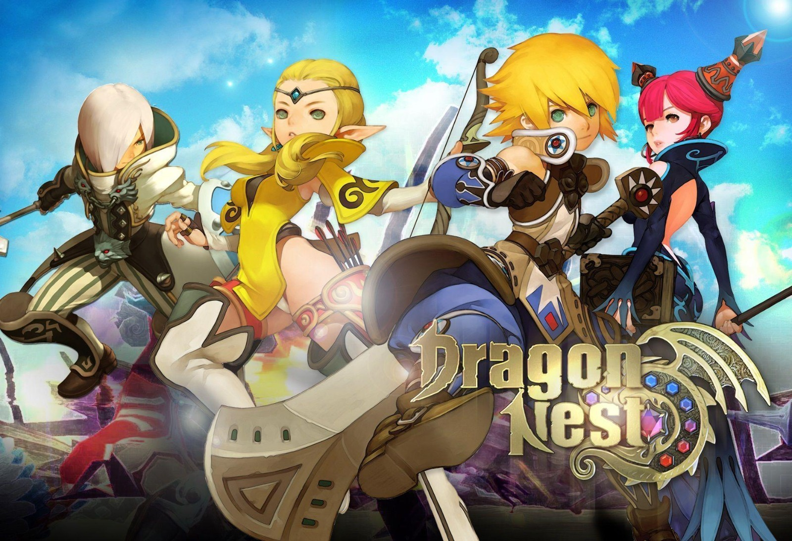

DRAGON NEST M

Dragon Nest M is an online role-playing game that's part of the Dragon Nest saga, the legendary franchise that includes more than a dozen different games. This is a very special MMORPG that lets you create your very own character with a super-deformed look. Gameplay in Dragon Nest M is the normal one you'd expect to see in games of this genre: you have to follow the story suggested by PNCs you're with. Increasing the level and getting the best equipment will be one of your main objectives. Thanks to its intuitive controls this task will be easier: move your character with the left virtual stick and to the right, you'll find the attack and special skill buttons. Some of the common sites of the game are the different dungeons of the Dragon Nest M world. You can find all kinds of enemies as well as other adventurers who are ready to achieve as much as you. The main city also has plenty of activities available for you: missions, buying, and selling of equipment, trading, etc. Dragon Nest M is an MMORPG with incredible visuals and devilish playability. You'll have tons of missions as well as thrilling PVP battles where you can face players from all over the world. Dragon Nest (Korean: 드래곤네스트) is a free-to-play fantasy MMORPG developed by Eyedentity and currently available in different regions and languages. Aside from boasting a non-targeting combat and skill system within instance dungeons, Dragon Nest also revolves around a rich story which is told in different points of view depending on the player's chosen class. Dragon Nest receives new content, balance patches and cash shop items on a monthly basis. Major expansions that include several new dungeons, Nests, new classes, multiple new features or remake of old ones, extensive class adjustments and a raise on the level cap take place every year. Dragon Nest incorporates non-targeting system gameplay to create a fast-paced action-filled experience. Players choose from a range of hero classes, characters that are of the Dragon Nest storyline that can equip customizable gear and weapons. Characters exist in one world, Kalahan, which resulted from Nexon uniting all four worlds to unite the characters. Devastating skills can also be learned, to increase one's power when defeating monsters in instance dungeons or defeating other players in PvP. Dragon Nest also has the advantage of being nearly completely skill-based, with lower level characters being able to defeat high level characters in PvP with skill alone. This allows a more experienced player that is of a lower level to dominate a less experienced player of a higher level player in PvP.
Download link:-https://play.google.com/store/apps/details?id=com.proximabeta.dn2.global&hl=en_IN&gl=PH
Home
previous page
Next page